H02 · Wellness Score · 실제 전후 검토 완료
H02_INSTALLED_ONLY_FOUR_ROWS · 네 normal 기기 전후와 실제 Phone finalglyphMAX 1PASS 검토를 완료했습니다. H02 네 기기의 실제 비교를 정식 맵에 반영했습니다. 다른 화면과 Watch 자료는 보존했습니다. 역사적Phone normal 개별 PASS/FAILED그룹 및 기존iPad2PASS와 새Duo·PhoneMAX 증거를 구분합니다.
역사적 Phone/iPad 실제 값은93 / Excellent이며 새 Duo 접힘·펼침은87 / Excellent입니다. 구성값은 Sleep99·Condition90·Body75·Posture—입니다. 제안81이나 가상 percentile·기록을 넣지 않았습니다. normal은 실제 Back 복귀, MAX는 마지막 계산 설명까지 확인하며 Back을 탭하지 않습니다.
일반 iPhone
일반 iPhone · 기존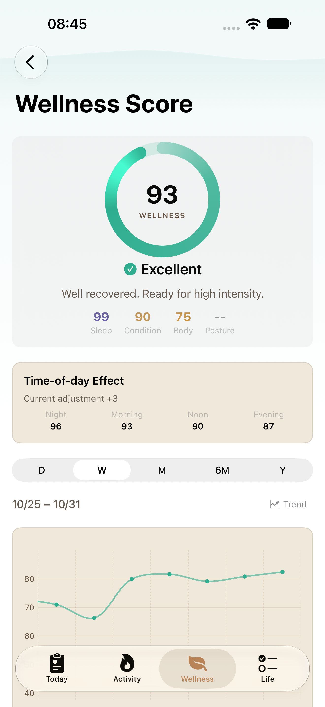
2dfe6e60 · 2026-10-31T08:45:05.155000+09:00
[1320, 2868] EXIF1
79feadd06760fa45b9236577f0a820f5054358e9e35cb0e7efa92466da5d307d일반 iPhone · 역사적 normal 개편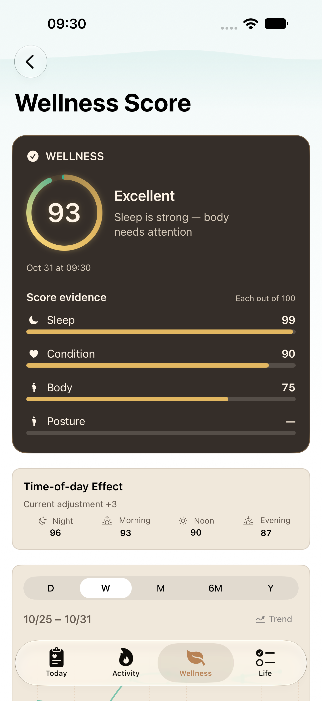
c7cfa366 · 2026-10-31T09:30:51.856000+09:00
[1320, 2868] EXIF1
b8f7206bcb7f44d12229e06d737eedac36414aca0e75dc8c647a7b75fb851827 iPad
iPad · 기존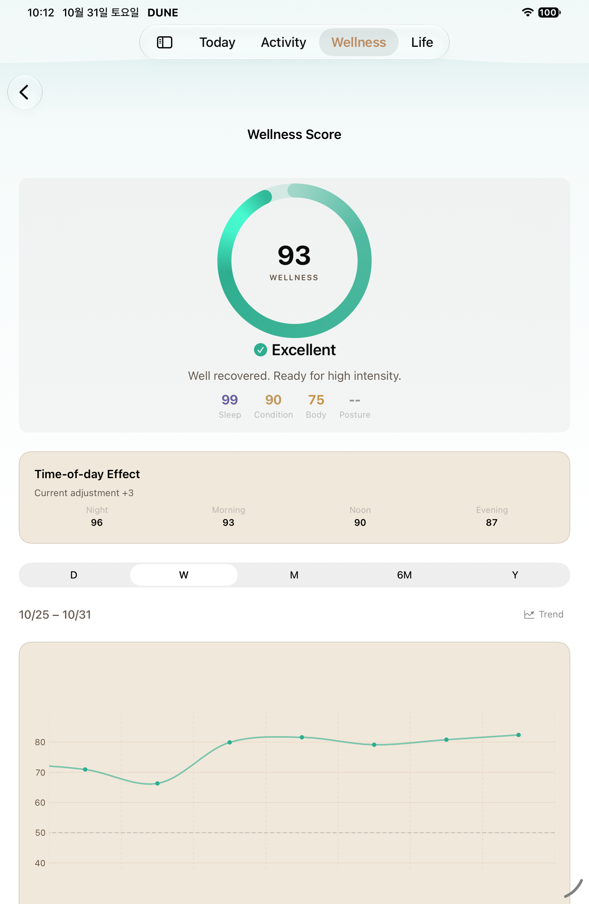
2dfe6e60 · 2026-10-31T10:12:55.278000+09:00
[1512, 2316] EXIF1
9ac8fa8227deb2f9da33db14e8283fbc029a75d22167ffcc57a26c83c3451c21iPad · 역사적 normal 개편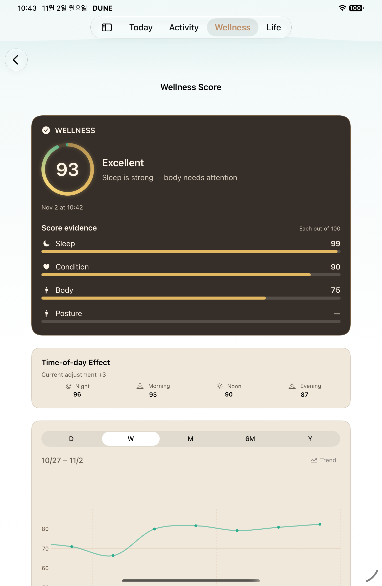
e83be1f5 · 2026-11-02T10:43:18.968000+09:00
[1512, 2316] EXIF1
7b20d2991128251cb9724127ca69bdaf1cf8241a7f32c8ea3cbb158222d6e33b Duo 접힘
Duo 접힘 · 기존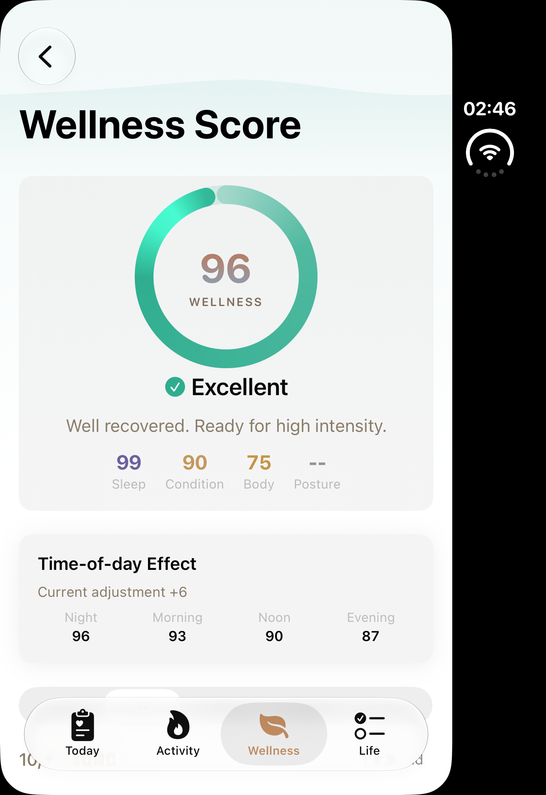
이미지별 소스 미확인 · 2026-10-13T02:46:49.125000+09:00
[1398, 2034] EXIF1
ae262a92ec1ce9a1eb8d6d30f4ebced7b7fe695ffa1a5183f2191eb15db97940Duo 접힘 · 실제 normal1PASS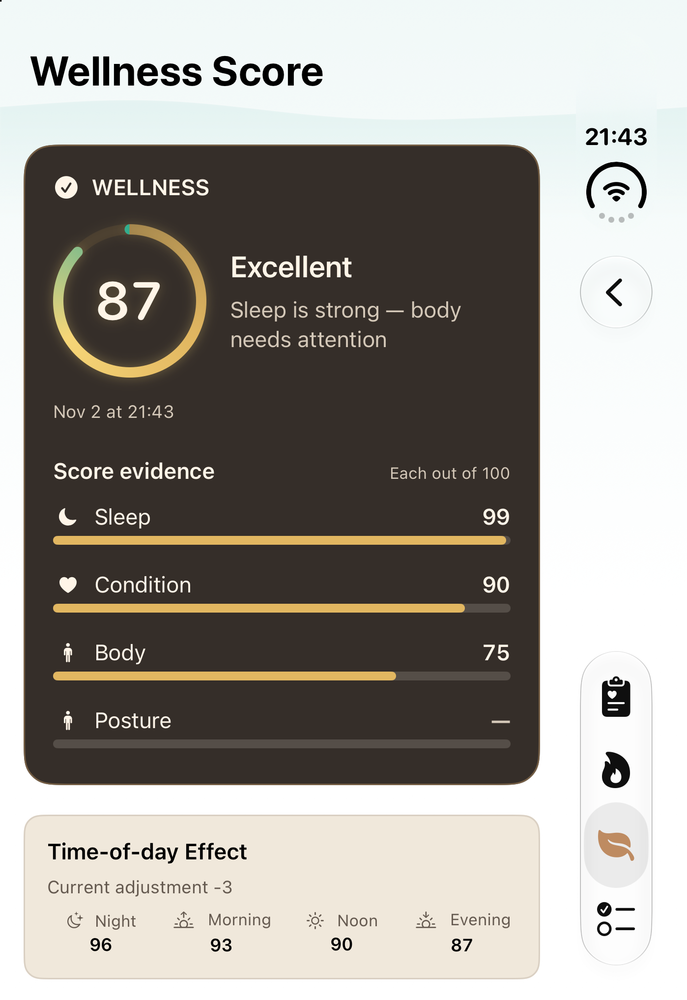
6bfe7c85 · 2026-11-02T21:43:50.513866+09:00
[1398, 2034] EXIF1
83543488dd407bc7ba6c4f7d005a6930328638319d05b54d3ad1e9db905b8f24 4strictACK · 전후0° 활성LCD. Nov2 21:43 실제87/Excellent·저녁−3이며 역사적 아침93과 같은 기록이 아닙니다. 정상 case에서 실제 Back→Wellness root를 검증했습니다. 선택002는 상세이고003/004의 root를 after로 쓰지 않았습니다.
Duo 펼침
Duo 펼침 · 기존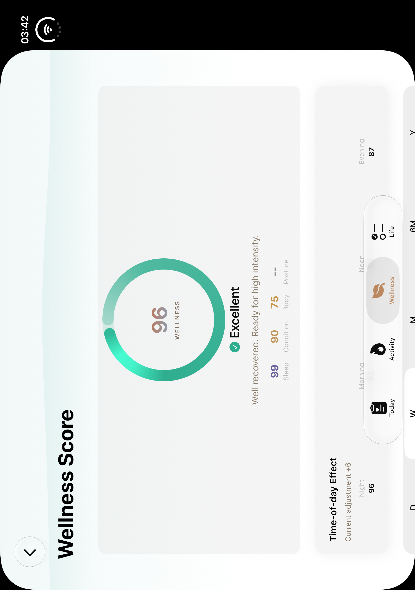
이미지별 소스 미확인 · 2026-10-13T03:42:06.127000+09:00
[2006, 2852] EXIF6
53e26630d08846d2f4b0ad4af63bc66fc01dafd7ff8ba9a13012ab18cf26ff0eDuo 펼침 · 실제 normal1PASS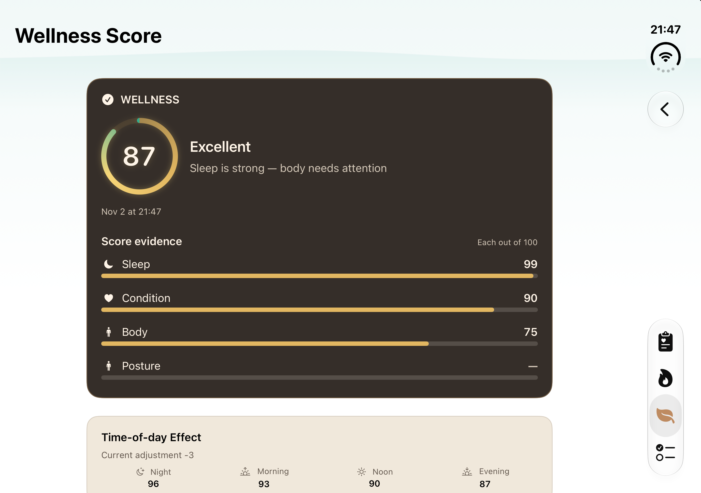
6bfe7c85 · 2026-11-02T21:47:36.247971+09:00
[2853, 2007] EXIF1
27b10ff4b98a6a045a308d7fbe37c78d0a397a71565966b5423de047163cbcd0 4strictACK · 전후180° 활성LCD-1. Nov2 21:47 실제87/Excellent·저녁−3이며 역사적 아침93과 같은 기록이 아닙니다. 정상 case에서 실제 Back→Wellness root를 검증했습니다. 선택002는 상세이고003/004의 root를 after로 쓰지 않았습니다.
iPad final glyph MAX · 실제 기존 2PASS 중 MAX
hero·시간대·마지막 계산 설명 원본입니다. status·range 원본도 각각 다시 열어 실제 내용을 확인했습니다. 한 화면에서 전체 내용을 동시에 보여준다는 뜻이 아닙니다.
MAX hero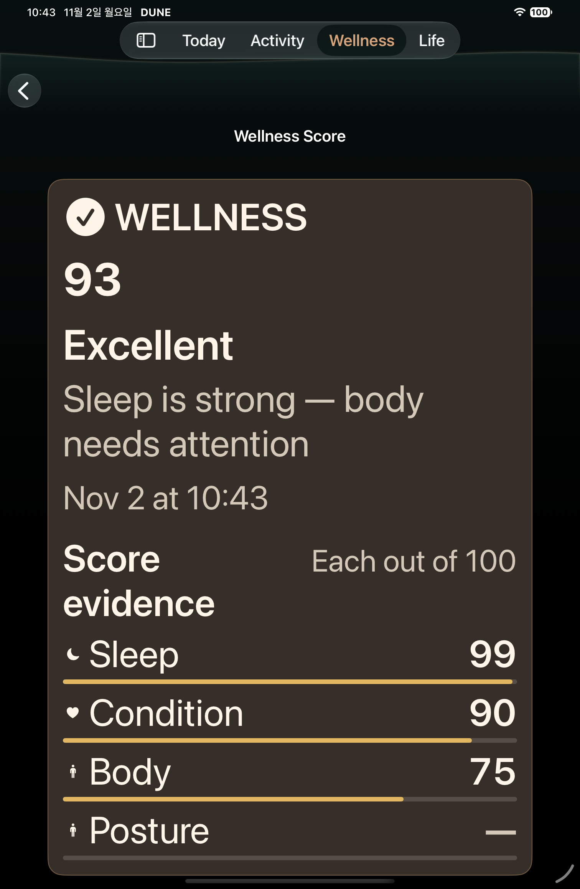
e83be1f5 · 2026-11-02T10:43:52.409000+09:00
[1512, 2316] EXIF1
78bdc10d949e3edaea4d9864cfb5a67dfc83c11eaaabee9d3d140d2cf01a33ecMAX statuse83be1f5 · 2026-11-02T10:43:54.207000+09:00
[1512, 2316] EXIF1
3ae5c1939f6015252541228e504fe31eaad73a5ad4bc460f554efe10d23323f5MAX time phase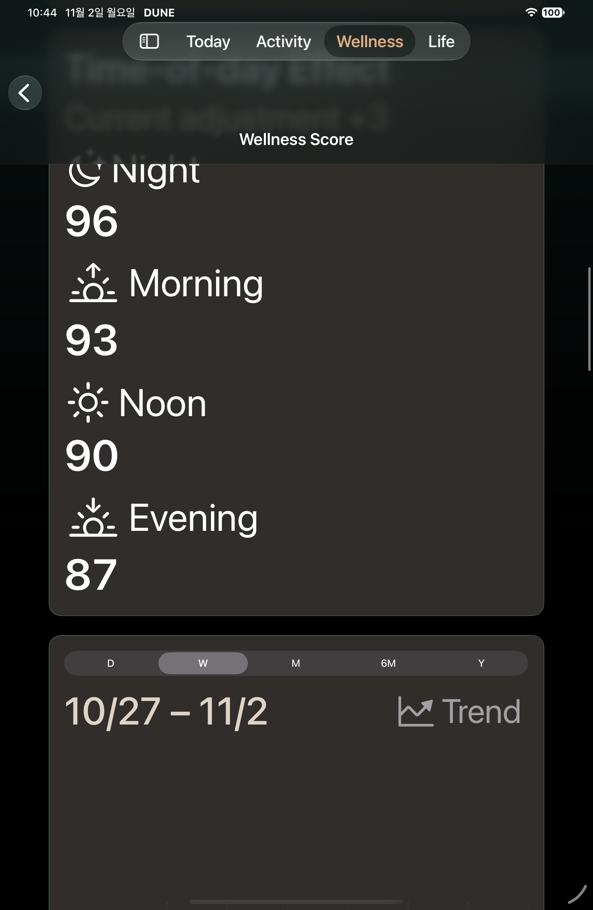
e83be1f5 · 2026-11-02T10:44:12.528000+09:00
[1512, 2316] EXIF1
dee1bb29aa32af6d3058c17a78b85c8467e243d2d480f802ef4e5083d1903b18MAX range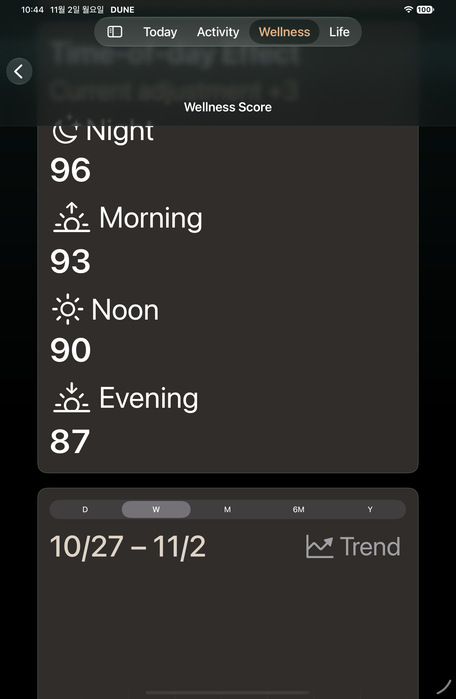
e83be1f5 · 2026-11-02T10:44:14.425000+09:00
[1512, 2316] EXIF1
e7118a01abd01805a987ff9e1a9b350c8049ca756d38e5744151e6f174017667MAX final calculation method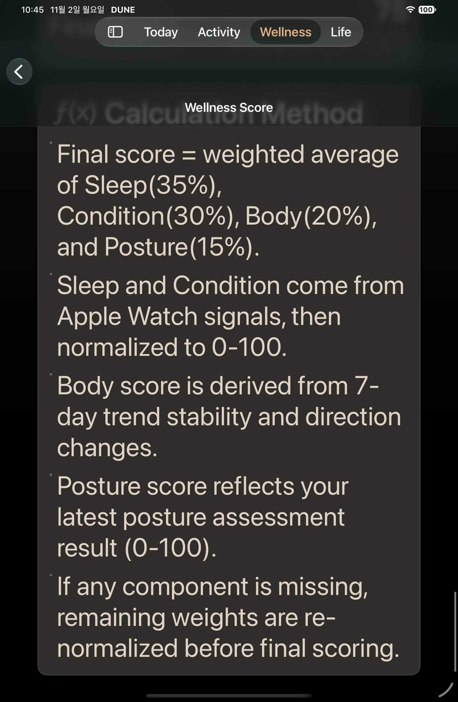
e83be1f5 · 2026-11-02T10:45:02.014000+09:00
[1512, 2316] EXIF1
4e96f96765910167788589fc71e99ed9937091e3f03ad9f3909b22fd347cff27 Phone final glyph MAX · 실제1PASS
실제87/Excellent·Nov2 21:55, 99/90/75/—와 아이콘, 두 줄 날짜 범위·기간 선택·Trend, 마지막 계산 설명 문단을 각각 확인했습니다. 첫 native 큰 제목의 ellipsis는 유지되며 스크롤 후 inline 전체 제목을 볼 수 있습니다. 마지막 method 이미지가 모든 문단을 동시에 보여준다는 뜻이 아닙니다. MAX는 Back을 탭하지 않았습니다.
Phone MAX hero87/Excellent/date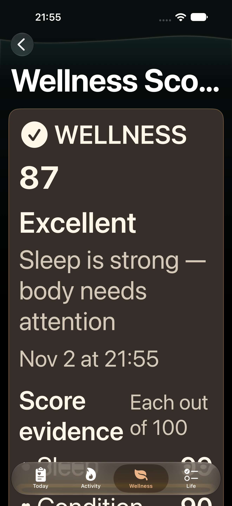
6bfe7c85 · 2026-11-02T21:55:19.936000+09:00
[1320, 2868] EXIF1
1f8e59a9da597ac078c2a5e85868da623716480737e641236ca0dd1d9633b6d7Phone MAX actualcomponents and fullicons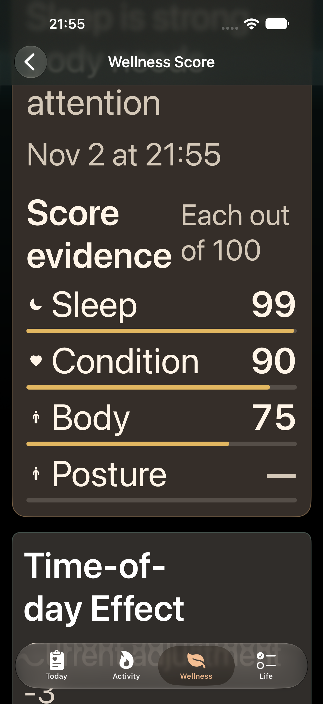
6bfe7c85 · 2026-11-02T21:55:35.575000+09:00
[1320, 2868] EXIF1
fc02da42c184c80a61f92cd2169ae0f788b92482636fae0dcef2b90dabd70b58Phone MAX wrappedrange/periods/trend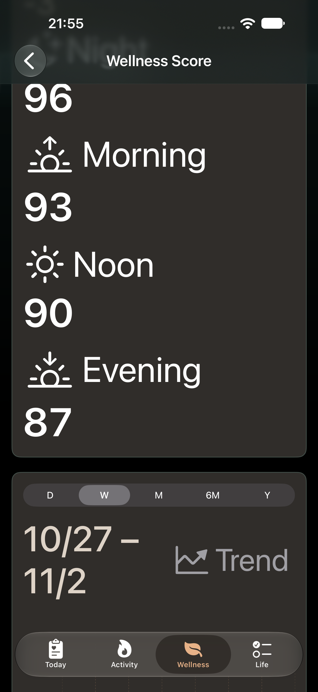
6bfe7c85 · 2026-11-02T21:55:48.962000+09:00
[1320, 2868] EXIF1
bb369e80bfa29d7bab20a7a07d500b12172e87873098092bbf2547258d5d0727Phone MAX finalmethod paragraphs afterscroll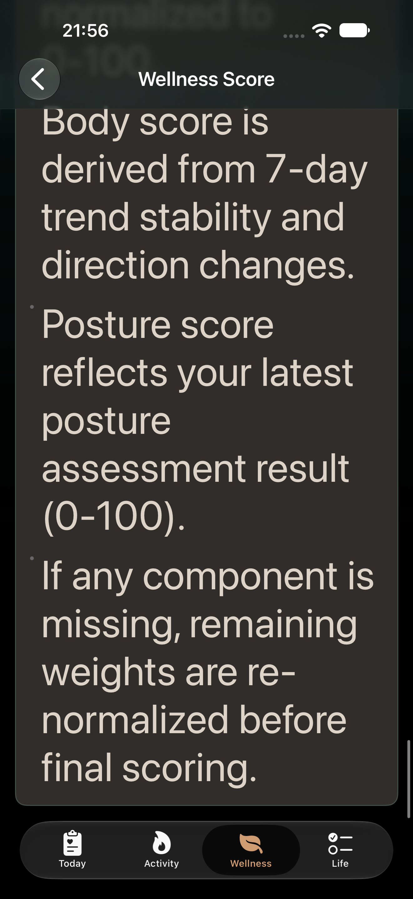
6bfe7c85 · 2026-11-02T21:56:50.566000+09:00
[1320, 2868] EXIF1
63a8016f16ff59ee94b0ddd24c836ff2dc2e4a4b02f72d3738d2572bade95897 출처와 범위
원본·해시·실제 결과 · 세 관점 최종 검토 · Open 출처 표기 P2 해결
Phone normal은 FAILED5/2/3 그룹의 개별 Passed node이며 같은logicalID 조건부3PASS 이력을 보존했습니다. 새PhoneMAX는 정확한 별도1PASS입니다. iPad finalglyph normal+MAX2PASS와 새Duo normal각1PASS를 재사용·새실행 범위대로 구분합니다. normal은 실제Back, MAX는Back 미탭입니다. 옛Duo Oct13/global443dirty·이미지별소스/자세미확인과 기기·날짜·실제기록 차이를 유지합니다. 세 UI 관점은 한 reviewer이며 P1/P2/P3=0입니다. 정식 맵은 H02 네 행만 갱신했습니다. 현재 CI·전체 회귀·PR 머지 결과는 별도로 기록합니다.